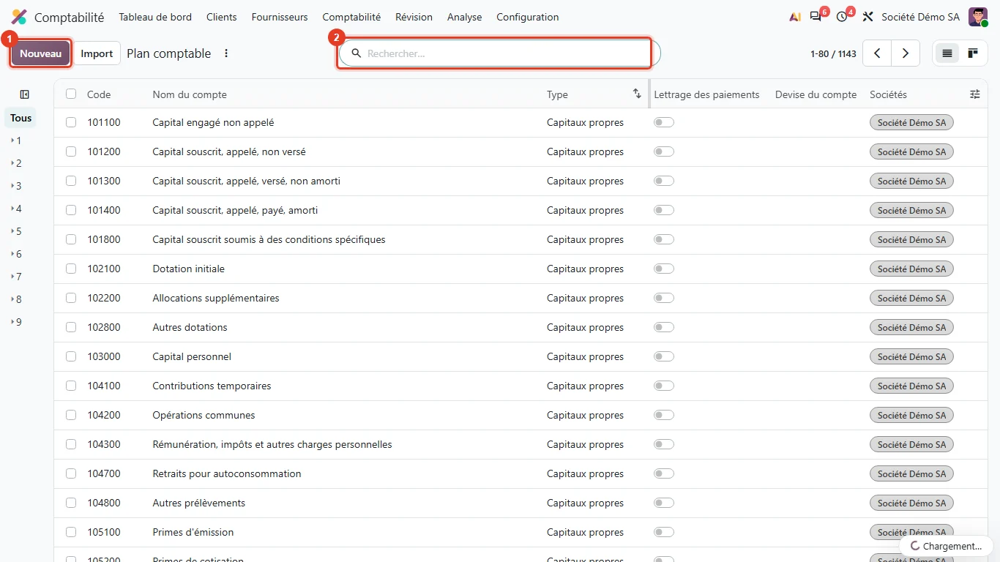

Créer, renommer et archiver un compte comptable
Objectif. Tenir le plan comptable aligné sur le référentiel de la société.
Menu Odoo 15Comptabilité > Configuration > Plan comptable
Étapes
- Créer : Nouveau (1), code, intitulé, type et lettrage (oui pour clients et fournisseurs).
- Renommer : recherchez le compte (2), modifiez l'intitulé ; le numéro ne change pas.
- Archiver : ouvrez le compte et cochez Déprécié. Un compte qui contient des écritures ne se supprime pas.

À vérifier
- Le type du compte est juste (il détermine sa place au bilan ou au résultat).
À éviter
- Ne créez pas un compte en double sous un autre numéro.
Exercice
Créez un compte de charge, renommez-le, puis archivez-le.